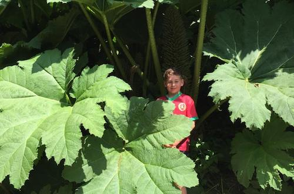

|  |
Plants are the powerhouses of life on Earth. They capture energy from the sun, absorb carbon dioxide and generate the oxygen which enables animal life to exist. They can also be very beautiful, and profoundly calming. It is easy and very satisfying for children to grow a plant of their own, and in doing so they can appreciate the way that plants work. Many young children will enjoy "helping" in the garden, and in doing so may develop a life-long enjoyment of gardening and getting out into Nature. |